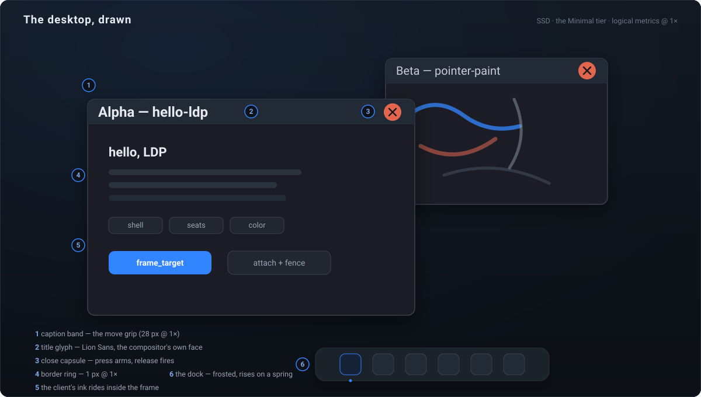
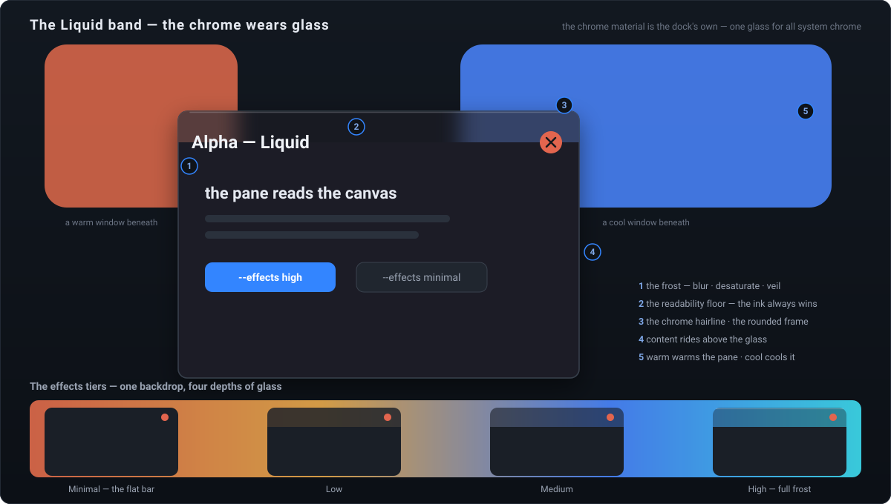
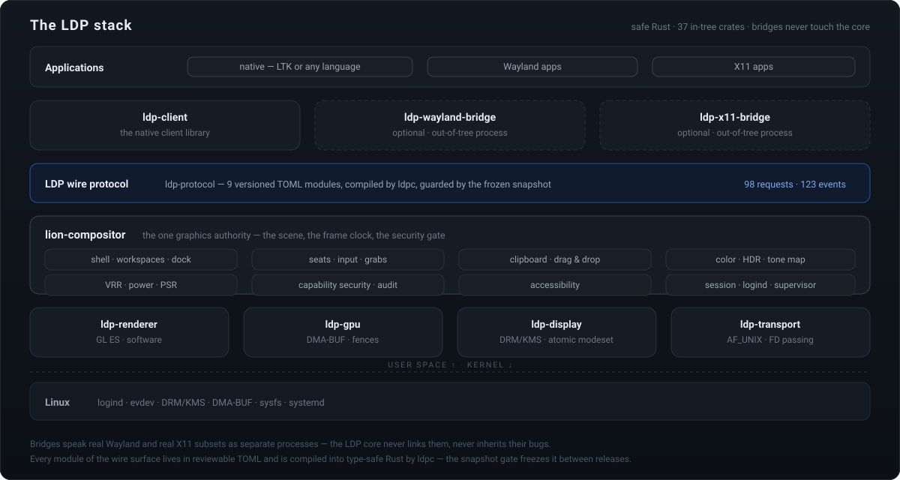
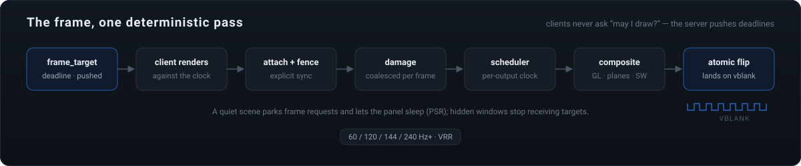

The desktop, drawn
Every server-decorated window carries chrome the compositor itself paints — the caption band, the border ring, the close capsule, and the title set in Lion Sans, the compositor's own typeface. The client never draws its own frame, so every window is readable, grippable, and closable from its first served frame.

start_move — and since v0.26.0 a double-click toggles the geometry verb (a floating window maximizes, a maximized one restores), riding the states arm's own two-phase commit.
minimal|low|medium|high.Server-truth geometry
Moves and resizes ride the input pump's own cadence — the frame never waits on a client round-trip, and the maximized window demotes under the hand's proportional grip.
Chrome-aware placement
Placement answers in frame space: a parked window's caption renders from row 0, the cascade steps captions, and the physical clamp holds the band's edge at fractional scales, pixel-true.
The double-click grammar
Two presses on the band — inside the 500 ms window and the 8 px radius — toggle the verb on the second press, the same two-phase commit the client's own maximize answers. Zero wire movement.
One stack, bridged compat
LDP is not a Wayland fork, rename, or re-implementation. Existing apps run through optional out-of-tree bridges that speak real Wayland and real X11 subsets — and never contaminate the core.

Safe Rust, audited unsafe
37 in-tree crates under a 54-entry dependency policy — 17 allowed externals. The server and client crates are #![forbid(unsafe_code)]; every unsafe block below them lives in a reviewed sys module.
The frozen wire
9 versioned TOML modules compiled into type-safe Rust by ldpc. The snapshot gate has held six consecutive releases: 98 requests · 123 events, zero drift — additive growth only, re-frozen consciously.
Bridges, not forks
ldp-wayland-bridge and ldp-x11-bridge are separate processes — weston-terminal, xclock, and xeyes ride them in the test suite, proving the guests without linking a line of their stacks.
The frame, one deterministic pass
Clients never ask “may I draw?” — the server pushes presentation deadlines, and the compositor commits against the vblank. Stable pipeline depth, no guess-driven latency, on 60 / 120 / 144 / 240 Hz+ panels with VRR.

Design pillars
Six commitments the whole machine is built to keep — each one carried in mechanism, not intention.
Deterministic frame scheduling
The compositor owns per-output timelines and pushes frame_target deadlines. Clients render against a deadline; the compositor commits against the vblank.
Explicit synchronization
Buffer handoff is fenced from day one — sync-file / syncobj DMA-BUF. No GPU races by construction; multi-GPU safe.
Generational object identity
Object IDs validate against per-slot generations. Use-after-destroy is a typed stale_object protocol error, never a misdelivered message.
Capability security
Deny by default. Screenshots, injection, and display config sit behind unforgeable 256-bit tokens from a broker; every grant and denial is audited.
First-class color
Every surface carries a color description; every output advertises its pipeline. PQ/HLG HDR, per-output tone mapping, ICC import, fractional scaling.
One protocol, many modules
A small core; shell, input, data, color, security, a11y, and session as versioned TOML modules, compiled into type-safe Rust by ldpc.
Sixteen releases, one gap at a time
The doctrine: one gap per phase, one phase per version — every release passes all nine verify gates before it ships, real sockets included. Scroll the rail.
Build it, run it, prove it
Requires Rust 1.75+ on Linux. The headless mode runs the whole machine with no GPU; the DRM mode takes a seat and serves real panels.
The verify gate adds fmt · clippy (-D warnings) · rustdoc · spec lint · dependency policy · the ldpc freeze snapshot · version coherence — the same nine gates every release ships under.
Read the machine
Every subsystem is documented in the repository — the honest kind, with the open gaps named.